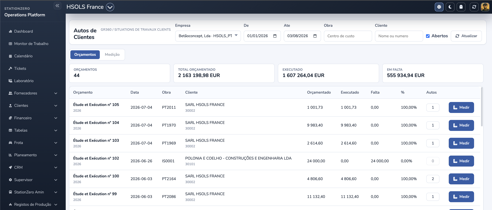

Guide utilisateur · création, consultation et retenues.
Première ébauche · v0.1 · 03-08-2026
1. Objectif et prérequis
Ce processus permet de créer une situation de travaux depuis un devis client, en enregistrant uniquement ce qui reste à exécuter. La situation est enregistrée dans le PHC de l’entreprise sélectionnée.
L’utilisateur doit avoir l’accès de consultation; pour enregistrer, il doit aussi disposer du droit d’insertion.
Le devis doit être lié à un chantier/processus et comporter des lignes mesurables.
Avant l’enregistrement, vérifiez l’entreprise, la date et les quantités/valeurs saisies.
1. Filtrer→2. Choisir le devis→3. Mesurer les lignes→4. Retenues (optionnel)→5. Enregistrer
2. Rechercher le devis
Dans Situations clients, choisissez l’entreprise puis, si besoin, filtrez par période, chantier et client. L’option Ouverts affiche par défaut les devis pour lesquels une mesure reste disponible.

Situations de travaux clientsGR360 / SITUATIONS DE TRAVAUX CLIENTS
Entreprise
GR360_CORE
Du
01/07/2026
Au
31/07/2026
Chantier
Centre de coût
Client
Nom ou numéro
État
☑ Ouverts
↻ Actualiser
DevisMesure
Devis3
Total budgété42 500,00 EUR
Exécuté18 000,00 EUR
Restant24 500,00 EUR
Devis
Date
Chantier
Client
Budgété
Exécuté
Restant
Devis nº 114
02/07/2026
OBR-026
Client exemple
20 000,00
8 000,00
12 000,00
Mesurer
Entreprise Détermine la base PHC utilisée pour consulter et enregistrer.
Indicateurs Affichent rapidement le total, l’exécuté et le solde.
Mesurer Ouvre le détail du devis; aucun document n’est encore créé.
3. Saisir la mesure
Cliquez sur Mesurer pour le devis concerné. Indiquez la date de la situation et renseignez, pour chaque ligne, la Qté situation, le Montant situation ou le % situation. L’application recalcule les autres champs et limite la saisie au solde disponible.
Devis nº 114 · OBR-026Client exemple · 02/07/2026 · GR360_CORE
Qté restante Renseigne chaque ligne avec le solde à exécuter. Vérifiez avant d’enregistrer.
Effacer / Annuler Supprime le brouillon; rien n’est enregistré dans PHC avant Enregistrer.
Cette situation Affiche le total du brouillon avant confirmation.
4. Appliquer des retenues (si nécessaire)
Sélectionnez Retenues pour choisir les types configurés pour l’entreprise. Activez une ligne, indiquez le pourcentage ou montant et, si disponible, choisissez la table TVA. Validez par Appliquer; la retenue est incluse uniquement lors de l’enregistrement.
Retenues de la situation · Total retenues: 125,00 EUR
Type
Description
Base
%
Montant
Table TVA
☑
RG
Retenue de garantie
2 500,00
5,000
125,00
23%
AnnulerAppliquer
5. Enregistrer et consulter l’historique
Après vérification des lignes et retenues, cliquez sur Enregistrer. L’application demande une confirmation avec le total puis crée la situation dans PHC. Elle affiche ensuite le numéro du document et actualise les soldes du devis.
Dans la liste des devis, le bouton Situations ouvre l’historique. Si une situation comporte une pièce jointe, utilisez Ouvrir la pièce jointe.